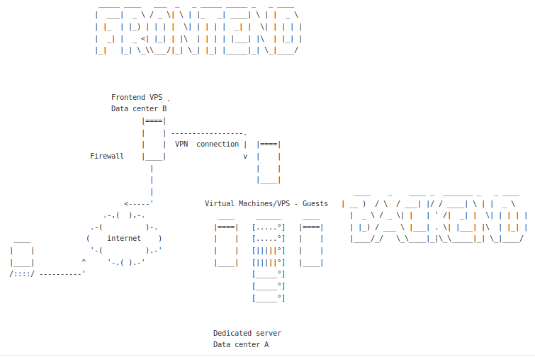

Authentication error
By default, the SSH client verifies the identity of the host to which it connects. If the remote host key is unknown, a user trying to connect is asked to accept it by typing “yes” or “no”. And it may fail.
@@@@@@@@@@@@@@@@@@@@@@@@@@@@@@@@@@@@@@@@@@@@@@@@@@@@@@@@@@@
@ WARNING: REMOTE HOST IDENTIFICATION HAS CHANGED! @
@@@@@@@@@@@@@@@@@@@@@@@@@@@@@@@@@@@@@@@@@@@@@@@@@@@@@@@@@@@
IT IS POSSIBLE THAT SOMEONE IS DOING SOMETHING NASTY!
Someone could be eavesdropping on you right now (man-in-the-middle attack)!
It is also possible that a host key has just been changed.
The fingerprint for the ECDSA key sent by the remote host is
<redacted>.
Please contact your system administrator.
Add correct host key in /home/user/.ssh/known_hosts to get rid of this message.
Offending ECDSA key in /home/user/.ssh/known_hosts:10
remove with:
ssh-keygen -f "/home/user/.ssh/known_hosts" -R jumphost
ECDSA host key for jumphost has changed and you have requested strict checking.
Host key verification failed.
ssh_exchange_identification: Connection closed by remote host
Besides a en:hacking:cryptography:cryptanalysis:man-itm|[mitm attack]] (Make sure this is not the case from a trusted source. An adversary may be spoofing the host and continuing may give the adversary the information they seek to attack your server), this can also happen
after changing a key: edit
~/.ssh/known_hostsfile and remove the offending line. In the above example that is line 10.when using ssh on a LAN (where DHCP is used and IP addresses change)
when jumping to multiple hosts from a jump host.

Bypassing verification (not recommended)
To disable the host key checking and the warnings, set StrictHostKeyChecking no in ~/.ssh/config and UserKnownHostsFile=/dev/null to send the key to a null known_hosts file to avoid future mismatches, and both defeat the intended verification security purpose.
For all hosts
Host *
StrictHostKeyChecking no
UserKnownHostsFile=/dev/null
For 192.168.0.0/24
Host 192.168.0.*
StrictHostKeyChecking no
UserKnownHostsFile=/dev/null
Even with StrictHostKeyChecking set to no, a user may still be refused to connect when connecting via ProxyJump or ProxyCommand with multiple hosts through a jumphost.
ProxyJump issues another ssh process, that does not inherit the command-line arguments that were specified on the command-line of the first ssh command.
Host jumphost
User jumpuser
StrictHostKeyChecking=no
UserKnownHostsFile=/dev/null
IdentityFile ~/.ssh/id_jumpuser_rsa
Get more information on what is happening with the ProxyCommand:
ssh -o ProxyCommand="ssh -o StrictHostKeyChecking=no -o UserKnownHostsFile=/dev/null -i ~/.ssh/id_jumpuser_rsa -W %h:%p jumpuser@jumphost" -i ~/.ssh/id_jumpuser_rsa jumpuser@XXX.XXX.XXX.XXX
HostKeyAlias
HostKeyAlias specifies an alias that should be used instead of the real host name when looking up or saving the host key in the host key database files. This option is useful for tunnelling SSH connections or for multiple servers running on a single host. It caches the remote public under the alias name. Useful if different openSSH servers are listening on different ports of the same physical server, because normally the port number is not stored when caching public host keys. If the key has a different name (alias) both keys can be cached and valid.
Host jumphost
HostName XXX.XXX.XXX.XXX
User user
HostKeyAlias jumphost
ProxyCommand ssh anotheruser@backendserver nc %h %p
CheckHostIP
And what if there are 2 different host keys for the same IP, or when the IP’s change (DHCP on a LAN for example)?
If CheckHostIP is set to yes (default), ssh will check the host IP address in the known_hosts file. This allows ssh to detect if a host key changed due to DNS spoofing. If the option is set to no, the check will not be executed.
Host server1
Hostname whatever1.com
HostKeyAlias server1
CheckHostIP no
Port 22001
User user
Host server2
Hostname whatever2.com
HostKeyAlias server2
CheckHostIP no
Port 22002
User user